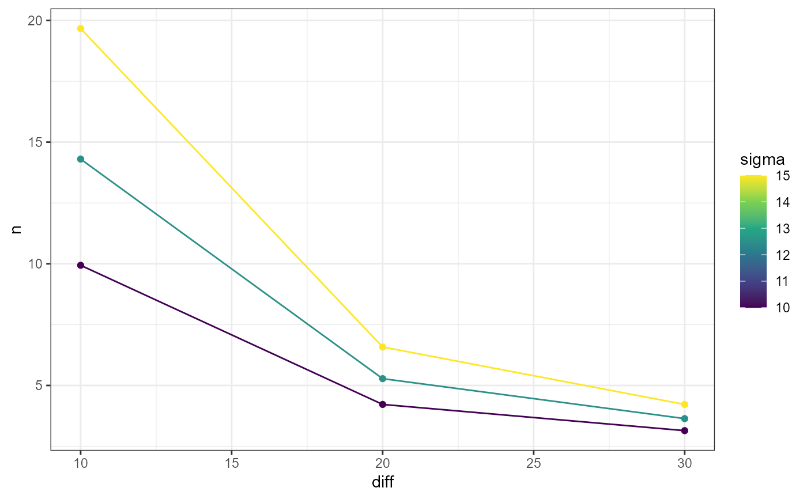
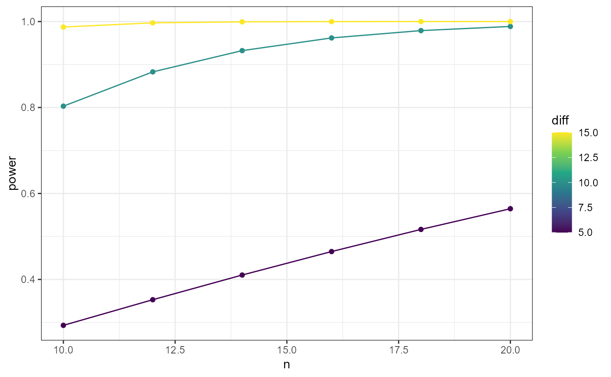

pwr_grid.RdCreate tables and plots for power and sample size calculations from a range of required parameters. All of the parameters accepts a range or sequence of numbers. Usable with pwr and stats::power.
pwr_grid(k = NULL, n = NULL, n1 = NULL, n2 = NULL, N = NULL, h = NULL, f = NULL, f2 = NULL, r = NULL, w = NULL, diff = NULL, sigma = NULL, d = NULL, df = NULL, u = NULL, v = NULL, sig.level = 0.05, power = NULL, type = NULL, alternative = NULL) pwr_tidy(pwr_grid, test_function) pwr_plot(pwr_tidy, x, y, group)
| n | Number of observations (per sample) |
|---|---|
| diff | Difference between the means |
| sigma | Standard deviation |
| d | Effect size (Cohen's d) |
| sig.level | Significance level (Type I error probability) |
| power | Power of test (1 minus Type II error probability) |
| type | Type of t test : one- two- or paired-samples |
| alternative | a character string specifying the alternative hypothesis, must be one of "two.sided" (default), "greater" or "less" |
| pwr_grid | outcome of pwr_grid function |
| test_function | function to calculate power from pwr or stats package |
| pwr_tidy | outcome of pwr_tidy function |
| x | x axis |
| y | y axis |
| group | colour variable |
canal endemico, union y grafico
pwr_grid:
pwr_tidy: create table with parameters and calculations
pwr_plot: create diagnostic plot
library(tidyverse)#>#> v ggplot2 3.2.1 v purrr 0.3.2 #> v tibble 2.1.3 v dplyr 0.8.3 #> v tidyr 1.0.0 v stringr 1.4.0 #> v readr 1.3.1 v forcats 0.4.0#> Warning: package 'ggplot2' was built under R version 3.6.2#> Conflicts ----------------------------------------- tidyverse_conflicts() -- #> x dplyr::filter() masks stats::filter() #> x dplyr::lag() masks stats::lag()library(pwr) library(powder) # stata # power onemean 20, diff(10 20 30) sd(10 12.5 15) eg1 <- pwr_grid(n = NULL, diff = c(10,20,30), sigma = c(10,12.5,15), d = NULL, sig.level = 0.05, power = 0.8, type = "one.sample", alternative = "two.sided") eg1 %>% pwr_tidy(test_function = pwr.t.test)#> Warning: Unknown columns: `n`#> Warning: Unknown columns: `d`, `type`, `alternative`#> Warning: Unknown columns: `d`, `type`, `alternative`#> Warning: Unknown columns: `d`, `type`, `alternative`#> Warning: Unknown columns: `d`, `type`, `alternative`#> Warning: Unknown columns: `d`, `type`, `alternative`#> Warning: Unknown columns: `d`, `type`, `alternative`#> Warning: Unknown columns: `d`, `type`, `alternative`#> Warning: Unknown columns: `d`, `type`, `alternative`#> Warning: Unknown columns: `d`, `type`, `alternative`#> # A tibble: 9 x 9 #> diff sigma sig.level power type alternative delta query n #> <dbl> <dbl> <dbl> <dbl> <chr> <chr> <dbl> <chr> <dbl> #> 1 10 10 0.05 0.8 one.sample two.sided 1 n 9.94 #> 2 10 12.5 0.05 0.8 one.sample two.sided 0.8 n 14.3 #> 3 10 15 0.05 0.8 one.sample two.sided 0.667 n 19.7 #> 4 20 10 0.05 0.8 one.sample two.sided 2 n 4.22 #> 5 20 12.5 0.05 0.8 one.sample two.sided 1.6 n 5.28 #> 6 20 15 0.05 0.8 one.sample two.sided 1.33 n 6.58 #> 7 30 10 0.05 0.8 one.sample two.sided 3 n 3.14 #> 8 30 12.5 0.05 0.8 one.sample two.sided 2.4 n 3.64 #> 9 30 15 0.05 0.8 one.sample two.sided 2 n 4.22eg1 %>% pwr_tidy(test_function = pwr.t.test) %>% pwr_plot(x = diff,y = n,group = sigma)#> Warning: Unknown columns: `n`#> Warning: Unknown columns: `d`, `type`, `alternative`#> Warning: Unknown columns: `d`, `type`, `alternative`#> Warning: Unknown columns: `d`, `type`, `alternative`#> Warning: Unknown columns: `d`, `type`, `alternative`#> Warning: Unknown columns: `d`, `type`, `alternative`#> Warning: Unknown columns: `d`, `type`, `alternative`#> Warning: Unknown columns: `d`, `type`, `alternative`#> Warning: Unknown columns: `d`, `type`, `alternative`#> Warning: Unknown columns: `d`, `type`, `alternative`# stata # power onemean 20, diff(5 (5) 15) sd(10) n(10 (2) 20) eg2 <- pwr_grid(n = seq(from = 10,to = 20,by = 2), diff = seq(from = 5,to = 15,by = 5), sigma = 10, d = NULL, sig.level = 0.05, #power = 0.8, type = "one.sample", alternative = "two.sided") eg2 %>% pwr_tidy(test_function = pwr.t.test)#> Warning: Unknown columns: `power`#> Warning: Unknown columns: `d`, `type`, `alternative`#> Warning: Unknown columns: `d`, `type`, `alternative`#> Warning: Unknown columns: `d`, `type`, `alternative`#> Warning: Unknown columns: `d`, `type`, `alternative`#> Warning: Unknown columns: `d`, `type`, `alternative`#> Warning: Unknown columns: `d`, `type`, `alternative`#> Warning: Unknown columns: `d`, `type`, `alternative`#> Warning: Unknown columns: `d`, `type`, `alternative`#> Warning: Unknown columns: `d`, `type`, `alternative`#> Warning: Unknown columns: `d`, `type`, `alternative`#> Warning: Unknown columns: `d`, `type`, `alternative`#> Warning: Unknown columns: `d`, `type`, `alternative`#> Warning: Unknown columns: `d`, `type`, `alternative`#> Warning: Unknown columns: `d`, `type`, `alternative`#> Warning: Unknown columns: `d`, `type`, `alternative`#> Warning: Unknown columns: `d`, `type`, `alternative`#> Warning: Unknown columns: `d`, `type`, `alternative`#> Warning: Unknown columns: `d`, `type`, `alternative`#> # A tibble: 18 x 9 #> n diff sigma sig.level type alternative delta query power #> <dbl> <dbl> <dbl> <dbl> <chr> <chr> <dbl> <chr> <dbl> #> 1 10 5 10 0.05 one.sample two.sided 0.5 power 0.293 #> 2 10 10 10 0.05 one.sample two.sided 1 power 0.803 #> 3 10 15 10 0.05 one.sample two.sided 1.5 power 0.987 #> 4 12 5 10 0.05 one.sample two.sided 0.5 power 0.353 #> 5 12 10 10 0.05 one.sample two.sided 1 power 0.883 #> 6 12 15 10 0.05 one.sample two.sided 1.5 power 0.997 #> 7 14 5 10 0.05 one.sample two.sided 0.5 power 0.410 #> 8 14 10 10 0.05 one.sample two.sided 1 power 0.932 #> 9 14 15 10 0.05 one.sample two.sided 1.5 power 0.999 #> 10 16 5 10 0.05 one.sample two.sided 0.5 power 0.465 #> 11 16 10 10 0.05 one.sample two.sided 1 power 0.962 #> 12 16 15 10 0.05 one.sample two.sided 1.5 power 1.000 #> 13 18 5 10 0.05 one.sample two.sided 0.5 power 0.516 #> 14 18 10 10 0.05 one.sample two.sided 1 power 0.979 #> 15 18 15 10 0.05 one.sample two.sided 1.5 power 1.000 #> 16 20 5 10 0.05 one.sample two.sided 0.5 power 0.565 #> 17 20 10 10 0.05 one.sample two.sided 1 power 0.989 #> 18 20 15 10 0.05 one.sample two.sided 1.5 power 1.000eg2 %>% pwr_tidy(test_function = pwr.t.test) %>% pwr_plot(x = n,y = power,group=diff)#> Warning: Unknown columns: `power`#> Warning: Unknown columns: `d`, `type`, `alternative`#> Warning: Unknown columns: `d`, `type`, `alternative`#> Warning: Unknown columns: `d`, `type`, `alternative`#> Warning: Unknown columns: `d`, `type`, `alternative`#> Warning: Unknown columns: `d`, `type`, `alternative`#> Warning: Unknown columns: `d`, `type`, `alternative`#> Warning: Unknown columns: `d`, `type`, `alternative`#> Warning: Unknown columns: `d`, `type`, `alternative`#> Warning: Unknown columns: `d`, `type`, `alternative`#> Warning: Unknown columns: `d`, `type`, `alternative`#> Warning: Unknown columns: `d`, `type`, `alternative`#> Warning: Unknown columns: `d`, `type`, `alternative`#> Warning: Unknown columns: `d`, `type`, `alternative`#> Warning: Unknown columns: `d`, `type`, `alternative`#> Warning: Unknown columns: `d`, `type`, `alternative`#> Warning: Unknown columns: `d`, `type`, `alternative`#> Warning: Unknown columns: `d`, `type`, `alternative`#> Warning: Unknown columns: `d`, `type`, `alternative`# stata # power onemean 100, n(10 20 30) power(0.8) sd(10 12.5 15) eg3 <- pwr_grid(n=c(10,20,30), #diff=c(10,20,30), sigma=c(10,12.5,15), d=NULL, sig.level=0.05, power=0.8, type="one.sample", alternative="two.sided") eg3 %>% pwr_tidy(test_function = power.t.test)#> Warning: Unknown columns: `delta`, `strict`, `tol`#> Warning: Unknown columns: `type`, `alternative`#> Warning: Unknown columns: `type`, `alternative`#> Warning: Unknown columns: `type`, `alternative`#> Warning: Unknown columns: `type`, `alternative`#> Warning: Unknown columns: `type`, `alternative`#> Warning: Unknown columns: `type`, `alternative`#> Warning: Unknown columns: `type`, `alternative`#> Warning: Unknown columns: `type`, `alternative`#> Warning: Unknown columns: `type`, `alternative`#> # A tibble: 9 x 8 #> n sigma sig.level power type alternative query delta #> <dbl> <dbl> <dbl> <dbl> <chr> <chr> <chr> <dbl> #> 1 10 10 0.05 0.8 one.sample two.sided delta 9.96 #> 2 10 12.5 0.05 0.8 one.sample two.sided delta 12.5 #> 3 10 15 0.05 0.8 one.sample two.sided delta 14.9 #> 4 20 10 0.05 0.8 one.sample two.sided delta 6.60 #> 5 20 12.5 0.05 0.8 one.sample two.sided delta 8.26 #> 6 20 15 0.05 0.8 one.sample two.sided delta 9.91 #> 7 30 10 0.05 0.8 one.sample two.sided delta 5.29 #> 8 30 12.5 0.05 0.8 one.sample two.sided delta 6.62 #> 9 30 15 0.05 0.8 one.sample two.sided delta 7.94eg3 %>% pwr_tidy(test_function = power.t.test) %>% pwr_plot(x = n,y = delta,group=sigma)#> Warning: Unknown columns: `delta`, `strict`, `tol`#> Warning: Unknown columns: `type`, `alternative`#> Warning: Unknown columns: `type`, `alternative`#> Warning: Unknown columns: `type`, `alternative`#> Warning: Unknown columns: `type`, `alternative`#> Warning: Unknown columns: `type`, `alternative`#> Warning: Unknown columns: `type`, `alternative`#> Warning: Unknown columns: `type`, `alternative`#> Warning: Unknown columns: `type`, `alternative`#> Warning: Unknown columns: `type`, `alternative`